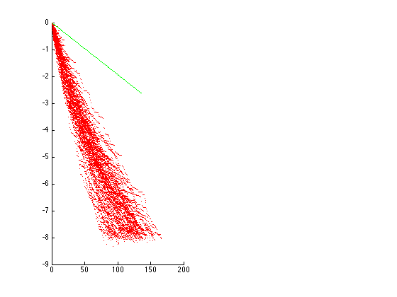
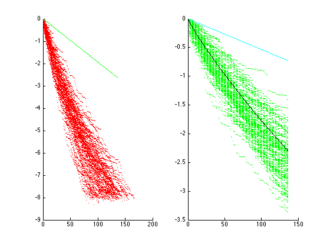

An numerical example for Block Kaczmarz algorithm with direct projection method modification
The demo with randomized block selection for standartized matrix.
Contents
Author
Ivanov Andrey, Candidate of Physico-Mathematical Sciences, ssauivanov@gmail.com.
Dept. of Applied Mathematics, S. P. Korolyov Samara State Aerospace University (National Research University), Faculty of Computer Science, Samara, Russia
Reference
[1] Needell, D., & Tropp, J. A. (2014). Paved with good intentions: analysis of a randomized block Kaczmarz method. Linear Algebra and its Applications, 441, 199-221.
[2] Vasil'chenko, G. P., & Svetlakov, A. A. (1980). A projection algorithm for solving systems of linear algebraic equations of high dimensionality. USSR Computational Mathematics and Mathematical Physics, 20(1), 1-8.
[3] Agaskar, A., Wang, C., & Lu, Y. M. (2014, December). Randomized Kaczmarz algorithms: Exact MSE analysis and optimal sampling probabilities. In Signal and Information Processing (GlobalSIP), 2014 IEEE Global Conference on (pp. 389-393). IEEE.
[4] Bai, Z., & Yin, Y. Q. (1993). Limit of the smallest eigenvalue of a large dimensional sample covariance matrix. The annals of Probability, 21, 1276-1294.
Create a test problem
clear all; rng(1309881); % for experiment repetition maxit = 1000; options.stoprule.type = 'ER'; tolerance_factor = 8; options.stoprule.epsilon = 10^-tolerance_factor;
We need to specify the number of experiments
MK_COUNT = 100;
Generate random standartized matrix, see more in [1,4].
m = 32; n = 16; A = (rand(m,n)-0.5); for i = 1:1:m A(i,:) = (A(i,:)./norm(A(i,:))); end;
Generate righthand vector
x = rand(n,1); x = x./norm(x); f = A*x; options.stoprule.solution = x; options.distribution = 'uniform'; %See more in [1]. block_size = 4; bloc_count = n/block_size; K=1:1:maxit;
Reproduction of numerical example from [1] for block algorithm.
figure; s_min_2 = min(eig(A'*A)); subplot(1,2,1) hold on; for j = 1:1:MK_COUNT [X info] = randpblockkaczmarz(A,f,block_size,K,[],options); [l1,l2]=size(X); l_betta = (1+sqrt(block_size/n))^2; % See more about this in [4]. errors = zeros(1,l2); estimate = zeros(1,l2); for i = 1:1:l2 errors(i) = log10(norm(X(:,i) - x)^2); estimate(i) = log10((1-s_min_2/(l_betta*bloc_count))^(i)); end; plot(1:1:l2,errors,'r.'); end; plot(1:1:l2,estimate,'-g');
Reproduction of numerical example from [3].
subplot(1,2,2) hold on; bloc_count = m; block_size = 1; K=1:1:l2; for j = 1:1:100 [X info] = randpblockkaczmarz(A,f,block_size,K,[],options); [l1,l2]=size(X); errors = zeros(1,l2); estimate = zeros(1,l2); for i = 1:1:l2 errors(i) = log10(norm(X(:,i) - x)^2); estimate(i) = log10((1-s_min_2/bloc_count)^(i)); end; plot(1:1:l2,errors,'g.'); end; plot(1:1:l2,estimate,'-c'); % See more about this in [3]. % This is not very pretty and efficient source code. % Much faster way to compute this matrix is exist, see in [3]. prob = ones(m,1)/m; RA = zeros(n^2,n^2); for i = 1:1:m P = eye(n,n) - A(i,:)'*A(i,:)/norm(A(i,:))^2; RA = RA + prob(i)*kron(P,P); end; xxt = x*x'; vec_xxt = reshape(xxt,1,n^2)'; RA_k = RA; estimate_B1 = zeros(1,l2); for k = 1:1:l2 estimate_B1(k) = reshape(eye(n,n),1,n^2) * RA_k * vec_xxt; RA_k = RA_k * RA; end; plot(1:1:l2,log10(estimate_B1),'-k');